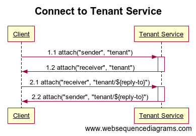
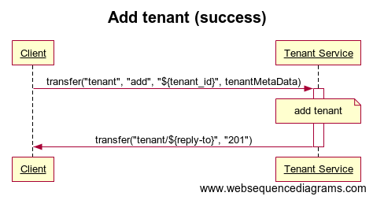
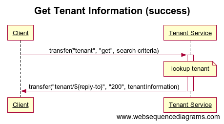
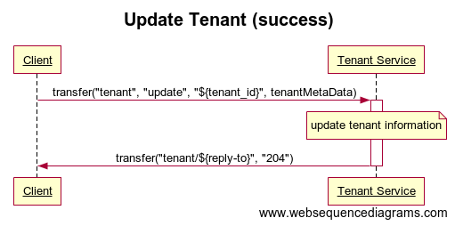
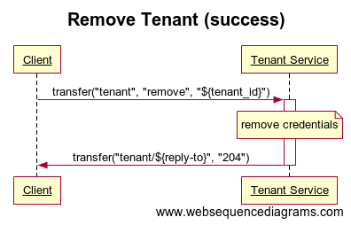

Tenant API
The Tenant API is used to make Hono aware of the tenants that are available in an installation. A tenant is a logical entity, which groups together a set of devices and consists of meta information which should be used by other Hono components. The tenant meta information is used for example to determine if a given tenant is allowed to use a certain protocol adapter or if devices are required to use authentication.
This API has been added in Hono 0.6. Previous versions do not support nor implement the Tenant API.
This document describes the Tenant API by means of available operations and data structure format only. For a full outline of the multi tenancy handling in Eclipse Hono please have a look at the Multi Tenancy page in the concepts section of this documentation.
Note, however, that in real world applications the tenant information will probably be kept and managed by an existing system of record, using e.g. a database for persisting the data. The Tenant API accounts for this fact by means of defining only the Get Tenant Information operation as mandatory, i.e. this operation is strictly required by a Hono instance for it to work properly, whereas the remaining operations are defined as optional from a Hono perspective.
The Tenant API is defined by means of AMQP 1.0 message exchanges, i.e. a client needs to connect to Hono using an AMQP 1.0 client in order to invoke operations of the API as described in the following sections.
Preconditions
The preconditions for performing any of the operations are as follows:
- Client has established an AMQP connection with Hono.
- Client has established an AMQP link in role sender with Hono using target address
tenant. This link is used by the client to send tenant commands to Hono. - Client has established an AMQP link in role receiver with Hono using source address
tenant/${reply-to}where reply-to may be any arbitrary string chosen by the client. This link is used by the client to receive responses to the tenant api requests it has sent to Hono. This link’s source address is also referred to as the reply-to address for the request messages.
This flow of messages is illustrated by the following sequence diagram (showing the AMQP performatives):

Operations
The operations described in the following sections can be used by clients to manage tenants and their meta information. In real world scenarios the provisioning of tenants will most likely be an orchestrated process spanning multiple components of which Hono will only be one.
Conducting and orchestrating the overall provisioning process is not in scope of Hono. However, Hono’s Tenant API can easily be used as part of such an overall provisioning process.
Add Tenant
Clients use this command to initially add a new tenant including tenant specific meta information to Hono.
This operation is optional, implementors of this API may provide other means for adding tenant information, e.g. a RESTful API or a configuration file.
Message Flow
The following sequence diagram illustrates the flow of messages involved in a Client creating a tenant.

Request Message Format
The following table provides an overview of the properties a client needs to set on an add tenant message in addition to the Standard Request Properties.
| Name | Mandatory | Location | Type | Description |
|---|---|---|---|---|
| subject | yes | properties | string | MUST be set to add. |
| tenant_id | yes | application-properties | string | MUST contain the ID of the tenant to add. |
The request message MUST contain a tenant payload as defined in the Request Payload section below.
Response Message Format
A response to an add tenant request contains the Standard Response Properties.
The response message’s status property may contain the following codes:
| Code | Description |
|---|---|
| 201 | Created, the tenant has been successfully created. |
| 400 | Bad Request, the tenant has NOT been created due to invalid data in the request. |
| 409 | Conflict, there already exists a tenant with the same tenant_id or using a trusted certificate authority with the same subject DN. |
For status codes indicating an error (codes in the 400 - 499 range) the message body MAY contain a detailed description of the error that occurred.
Get Tenant Information
Clients use this command to retrieve information about a tenant.
This operation is mandatory to implement.
Message Flow
The following sequence diagram illustrates the flow of messages involved in a Client retrieving tenant information.

Request Message Format
The following table provides an overview of the properties a client needs to set on a message to get tenant information in addition to the Standard Request Properties.
| Name | Mandatory | Location | Type | Description |
|---|---|---|---|---|
| subject | yes | properties | string | MUST be set to get. |
The body of the request MUST consist of a single AMQP Value section containing a UTF-8 encoded string representation of a single JSON object containing exactly one of the following search criteria properties:
| Name | Mandatory | Type | Description |
|---|---|---|---|
| subject-dn | no | string | The subject DN of the trusted certificate authority’s public key in the format defined by RFC 2253. |
| tenant-id | no | string | The identifier of the tenant to get. |
The following request payload may be used to look up the tenant with identifier ACME Corporation:
{
"tenant-id": "ACME Corporation"
}
The following request payload may be used to look up the tenant for which a trusted certificate authority with subject DN O=ACME Corporation, CN=devices has been configured:
{
"subject-dn": "CN=devices,O=ACME Corporation"
}
Response Message Format
A response to a get tenant information request contains the Standard Response Properties.
The response message includes payload as defined in the Response Payload section below.
The response message’s status property may contain the following codes:
| Code | Description |
|---|---|
| 200 | OK, the payload contains the tenant information for the requested tenant. |
| 404 | Not Found, there is no tenant identified with the given tenant_id. |
For status codes indicating an error (codes in the 400 - 499 range) the message body MAY contain a detailed description of the error that occurred.
Update Tenant
Clients use this command to update information about an already existing tenant. All of the information that has been previously provided for the tenant gets replaced with the information contained in the request message.
If a tenant is updated:
- Devices of the updated tenant may be able to interact with Hono using a previously not available protocol adapter.
- Devices of the updated tenant may loose the ability to interact with Hono using a previously used protocol adapter.
- Devices of the updated tenant may have to adapt their configuration (e.g. means of authentification) to continue interacting with Hono.
- Consumers of the updated tenant may need to adapt their configuration to be able to continue interacting with Hono.
As Hono is a distributed system, the update of the tenant may take some time until the change is visible in all affected components. E.g. It may happen that a consumer for a short period of time is still receiving messages of an adapter it is no longer allowed to use.
This operation is optional, implementors of this API may provide other means for updating tenants, e.g. a RESTful API or a configuration file.
Message Flow
The following sequence diagram illustrates the flow of messages involved in a Client updating tenant information.

Request Message Format
The following table provides an overview of the properties a client needs to set on an update tenant message in addition to the Standard Request Properties.
| Name | Mandatory | Location | Type | Description |
|---|---|---|---|---|
| subject | yes | properties | string | MUST be set to update. |
| tenant_id | yes | application-properties | string | MUST contain the ID of the tenant to update. |
The request message MUST include payload as defined in the Request Payload section below.
Response Message Format
A response to an update tenant request contains the Standard Response Properties.
The response message’s status property may contain the following codes:
| Code | Description |
|---|---|
| 204 | No Content, the tenant has been updated successfully. |
| 400 | Bad Request, the tenant has NOT been updated due to invalid data in the request. |
| 404 | Not Found, there is no tenant identified with the given tenant_id. |
| 409 | Conflict, there already exists another tenant that uses a trusted certificate authority with the same subject DN. |
For status codes indicating an error (codes in the 400 - 499 range) the message body MAY contain a detailed description of the error that occurred.
Remove Tenant
Clients use this command to remove all information about a tenant from Hono.
If a tenant is removed:
- Consumers of the removed tenant can no longer connect to Hono to receive device data.
- Consumers of the removed tenant can no longer interact with Hono APIs (e.g. the Device Management API).
- Devices of the removed tenant will not longer receive any data from Hono.
- Devices of the removed tenant are unable to upload data.
As Hono is a distributed system, the removal of the tenant may take some time until the change is visible in all affected components. Therefore it may occur that even after the removal of the tenant through this API, not all of the above stated consequences are in effect immediately. E.g. it may happen that messages of this tenant are still processed for a short period of time.
This operation is optional, implementors of this API may provide other means for removing tenant information, e.g. a RESTful API or a configuration file.
Message Flow
The following sequence diagram illustrates the flow of messages involved in a Client removing a device.

Request Message Format
The following table provides an overview of the properties a client needs to set on a remove tenant message in addition to the Standard Request Properties.
| Name | Mandatory | Location | Type | Description |
|---|---|---|---|---|
| subject | yes | properties | string | MUST be set to remove. |
| tenant_id | yes | application-properties | string | MUST contain the ID of the tenant to remove. |
The body of the message SHOULD be empty and will be ignored if it is not.
Response Message Format
A response to a remove tenant request contains the Standard Response Properties.
The response may contain the following status codes:
| Code | Description |
|---|---|
| 204 | No Content, the tenant has been removed successfully. |
| 404 | Not Found, there is no tenant identified with the given tenant_id. |
For status codes indicating an error (codes in the 400 - 499 range) the message body MAY contain a detailed description of the error that occurred.
Standard Message Properties
Due to the nature of the request/response message pattern of the operations of the Tenant API, there are some standard properties shared by all of the request and response messages exchanged as part of the operations.
Standard Request Properties
The following table provides an overview of the properties shared by all request messages regardless of the particular operation being invoked.
| Name | Mandatory | Location | Type | Description |
|---|---|---|---|---|
| subject | yes | properties | string | MUST be set to the value defined by the particular operation being invoked. |
| correlation-id | no | properties | message-id | MAY contain an ID used to correlate a response message to the original request. If set, it is used as the correlation-id property in the response, otherwise the value of the message-id property is used. |
| message-id | yes | properties | string | MUST contain an identifier that uniquely identifies the message at the sender side. |
| reply-to | yes | properties | string | MUST contain the source address that the client wants to received response messages from. This address MUST be the same as the source address used for establishing the client’s receive link (see Preconditions). |
Standard Response Properties
The following table provides an overview of the properties shared by all response messages regardless of the particular operation being invoked.
| Name | Mandatory | Location | Type | Description |
|---|---|---|---|---|
| correlation-id | yes | properties | message-id | Contains the message-id (or the correlation-id, if specified) of the request message that this message is the response to. |
| tenant_id | yes | application-properties | string | Contains the ID of the tenant that is subject of the outcome of the operation. |
| status | yes | application-properties | int | Contains the status code indicating the outcome of the operation. Concrete values and their semantics are defined for each particular operation. |
| cache_control | no | application-properties | string | Contains an RFC 2616 compliant cache directive. The directive contained in the property MUST be obeyed by clients that are caching responses. |
Delivery States
Hono uses the following AMQP message delivery states when receiving request messages from clients:
| Delivery State | Description |
|---|---|
| ACCEPTED | Indicates that Hono has successfully received and accepted the request for processing. |
| REJECTED | Indicates that Hono has received the request but was not able to process it. The error field contains information regarding the reason why. Clients should not try to re-send the request using the same message properties in this case. |
Payload Format
Most of the operations of the Tenant API allow or require the inclusion of tenant data in the payload of the request or response messages of the operation. Such payload is carried in the body of the corresponding AMQP messages as part of a single AMQP Value section.
The tenant data is carried in the payload as a UTF-8 encoded string representation of a single JSON object. It is an error to include payload that is not of this type.
Request Payload
The table below provides an overview of the standard members defined for the JSON request object:
| Name | Mandatory | Type | Default Value | Description |
|---|---|---|---|---|
| enabled | no | boolean | true |
If set to false the tenant is currently disabled. Protocol adapters MUST NOT allow devices of a disabled tenant to connect and MUST NOT accept data published by such devices. |
| trusted-ca | no | JSON object | - |
The trusted certificate authority to use for validating certificates presented by devices of the tenant for authentication purposes. See Trusted Certificate Authority Format for a definition of the content model of the object. |
| adapters | no | array | - |
A list of configuration options valid for certain adapters only. The format of a configuration option is described here Adapter Configuration Format. NB If the element is provided then the list MUST NOT be empty. NB Only a single entry per type is allowed. If multiple entries for the same type are present it is handled as an error. NB If the element is omitted then all adapters are enabled in their default configuration. |
If any of the mandatory members is either missing or contains invalid data, implementations MUST NOT accept the payload and return 400 Bad Request status code.
The JSON object MAY contain an arbitrary number of additional members with arbitrary names of either scalar or complex type. This allows for future well-known additions and also allows clients to add further information which might be relevant to a custom adapter only.
Examples
Below is an example for a request payload defining an enabled tenant. Devices belonging to the tenant can connect to Hono via the rest-adapter only and are required to authenticate with the adapter on connection.
NB The id of the tenant is not part of the JSON as it is defined in the application properties of the AMQP 1.0 message.
{
"enabled": true,
"adapters": [
{
"type": "hono-http",
"enabled": true,
"device-authentication-required": true,
"deployment": {
"maxInstances": 4
}
}
]
}
In the following example the tenant is allowed to use all adapters, as the adapters property is omitted in the tenant configuration. Note that the payload also contains a custom property plan which might be used to indicate the customer’s service level:
{
"enabled": true
"plan": "gold",
}
The following example contains information for a tenant including the public key of the trusted root certificate authority. Note that the example does not contain the complete Base64 encoding of the public key for reasons of brevity:
{
"enabled": true,
"trusted-ca": {
"subject-dn": "CN=devices,O=ACME Corporation",
"public-key": "MIICIjANBgkqhkiG9w0BAQEFAAOCAg8AMIICCgKCAgEApK5L6yUknQnj4FREQqs/ ..."
}
}
Response Payload
The table below provides an overview of the standard members defined for the JSON response object:
| Name | Mandatory | Type | Description |
|---|---|---|---|
| tenant-id | yes | string | The ID of the tenant. |
| enabled | yes | boolean | If set to false the tenant is currently disabled. Protocol adapters MUST NOT allow devices of a disabled tenant to connect and MUST NOT accept data published by such devices. |
| trusted-ca | no | JSON object | The trusted certificate authority to use for validating certificates presented by devices of the tenant for authentication purposes. See Trusted Certificate Authority Format for a definition of the content model of the object. |
| adapters | no | JSON array | A list of configuration options valid for certain adapters only. The format of a configuration option is described here Adapter Configuration Format. NB If the element is provided then the list MUST NOT be empty. NB Only a single entry per type is allowed. If multiple entries for the same type are present it is handled as an error. NB If the element is omitted then all adapters are enabled in their default configuration. |
Additionally to the specified properties the JSON object MAY contain an arbitrary number of members with arbitrary names which can be of a scalar or a complex type. This allows for future well-known additions and also allows clients to add further information which might be relevant to a custom adapter only.
Trusted CA Format
The table below provides an overview of the members defined for the trusted-ca JSON object:
| Name | Mandatory | Type | Default Value | Description |
|---|---|---|---|---|
| subject-dn | yes | string | The subject DN of the trusted root certificate in the format defined by RFC 2253. | |
| public-key | yes | string | The Base64 encoded binary DER encoding of the trusted root certificate’s public key. |
The subject-dn MUST be unique among all registered tenants. Implementations MUST reject requests to add or update a tenant with payload that contains a subject DN that is already configured for another tenant and return a status code of 409 Conflict.
Adapter Configuration Format
The table below contains the properties which are used to configure a Hono protocol adapter:
| Name | Mandatory | Type | Default Value | Description |
|---|---|---|---|---|
| type | yes | string | - |
The type of the adapter which this configuration belongs to. |
| enabled | no | boolean | false |
If set to false the tenant is not allowed to receive / send data utilizing the given adapter. |
| device-authentication-required | no | boolean | true |
If set to false, devices are not required to authenticate with the adapter before sending / receiving data. |
Protocol adapters SHOULD use the configuration properties set for a tenant when interacting with devices of that tenant, e.g. in order to make authorization decisions or to limit message rates per tenant etc.
The JSON object MAY contain an arbitrary number of additional members with arbitrary names of either scalar or complex type.
Examples
Below is an example for a payload of the response to a get request for tenant TEST_TENANT. Note that the payload contains some custom properties at both the tenant (plan) as well as the adapter configuration level (deployment).
{
"tenant-id" : "TEST_TENANT",
"enabled" : true,
"plan": "gold",
"adapters" : [ {
"type" : "hono-mqtt",
"enabled" : true,
"device-authentication-required" : true
}, {
"type" : "hono-http",
"enabled" : true,
"device-authentication-required" : true,
"deployment": {
"maxInstances": 4
}
} ]
}